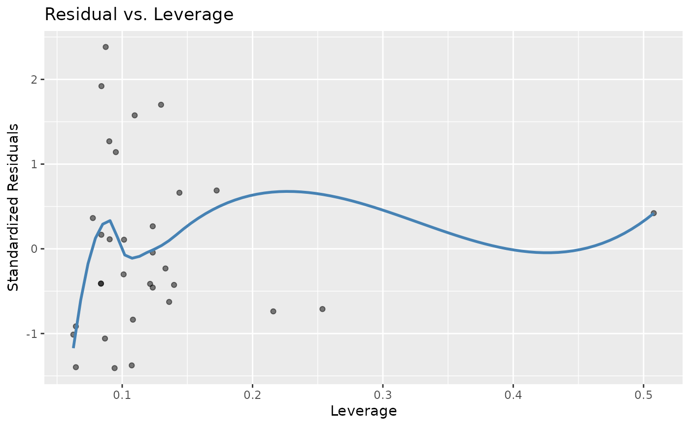

Residual vs. leverage plot.
Usage
stat_resid_leverage(
alpha = 0.5,
method = "loess",
se = FALSE,
color = "steelblue",
...
)
Arguments
- alpha
Adjust transparency of points.
- method
Method for fitting the line to the points.
- se
Keep standard error bands around line?
- color
Color of the line.
- ...
Currently ignored. For extendability.
Value
A `ggplot2` layer for plotting a fitted vs. residual scatter plot.
Examples
data(mtcars)
model <- lm(mpg ~ cyl + disp + hp, data = mtcars)
ggplot2::ggplot(data = model) + stat_resid_leverage()
